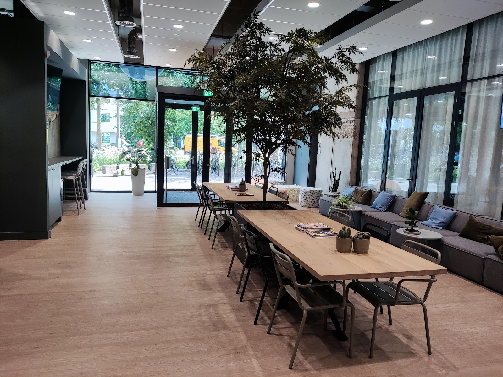
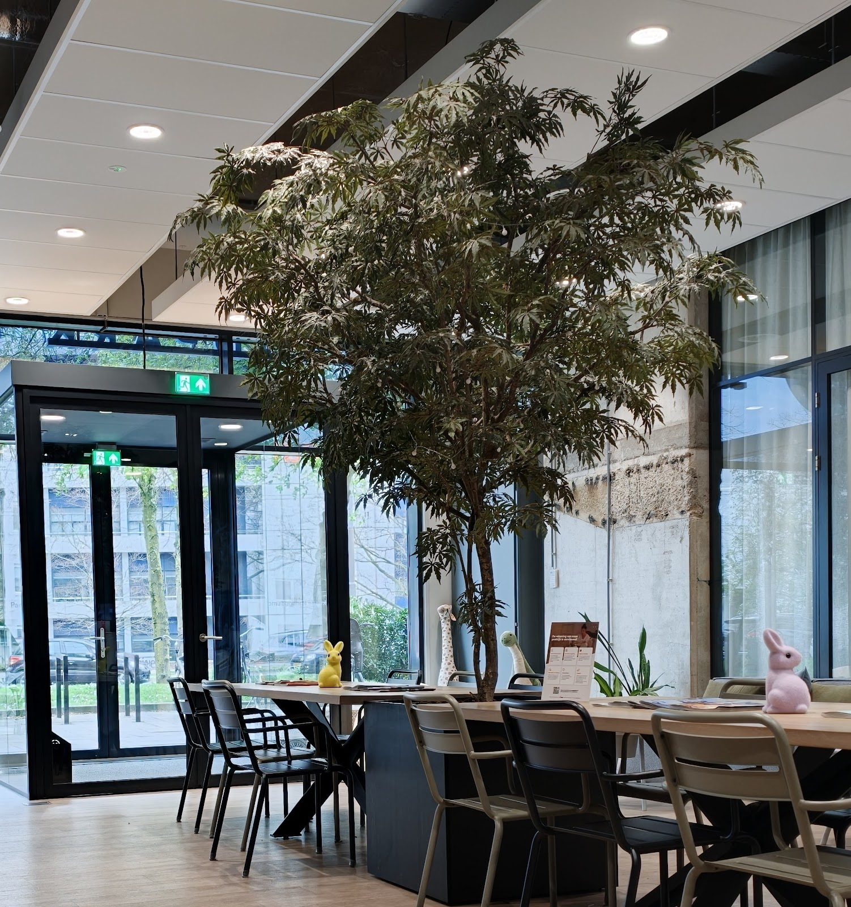
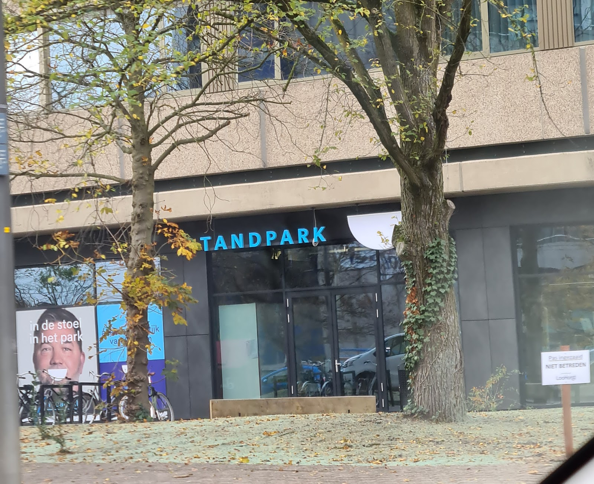
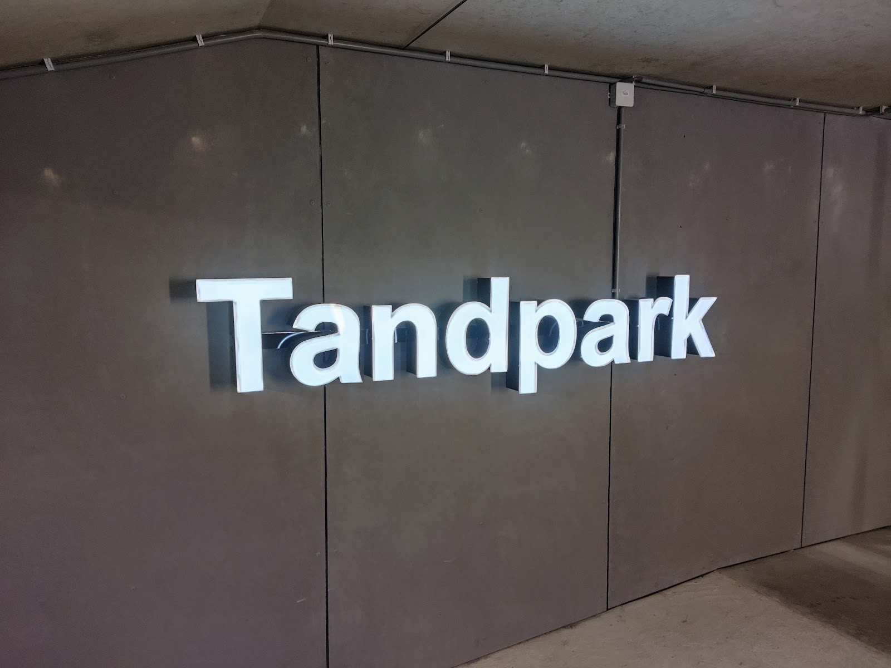

In de stoel, in het park.
Tandpark is de tandartspraktijk aan de Velperweg in Arnhem. Voor volwassenen en kinderen, in een lichte praktijk met een boom in de wachtruimte.

- Open
- Ma t/m vr, 08:00 tot 16:45
- Adres
- Velperweg 49A, Arnhem
- 4,4 sterren uit 420 reviews
Wachten aan de grote tafel
Wie bij Tandpark binnenkomt, staat niet in een gang met een rij stoeltjes. De wachtruimte is een ruime, lichte hal met eiken tafels, zachte banken en midden in de ruimte een boom.
Pak een tijdschrift, ga even zitten bij het raam, of laat de kinderen kijken naar de knuffels op tafel. Zo begint een bezoek aan de tandarts een stuk rustiger.

Kom met het hele gezin
Tandpark heeft een eigen kindertandarts. Volg in de hal gewoon de pijl naar kids. Zo kunnen ouders en kinderen bij dezelfde praktijk terecht.
"Ik vind het een prima praktijk, we komen er met het hele gezin. Voor onze jonge kinderen is de kindertandarts prettig, rustig en vriendelijk maar kordaat waar nodig. Als ouder krijg je ook de ruimte er voor je kind te zijn."

Langskomen aan de Velperweg
Openingstijden
| Maandag | 08:00 tot 16:45 |
| Dinsdag | 08:00 tot 16:45 |
| Woensdag | 08:00 tot 16:45 |
| Donderdag | 08:00 tot 16:45 |
| Vrijdag | 08:00 tot 16:45 |
| Zaterdag | Gesloten |
| Zondag | Gesloten |


Kiespijn of een vraag? Bel ons.
Op werkdagen tussen 08:00 en 16:45 staan we voor u klaar. Een vraag die niet haast? Mail gerust, dan hoeft u niet te wachten aan de telefoon.